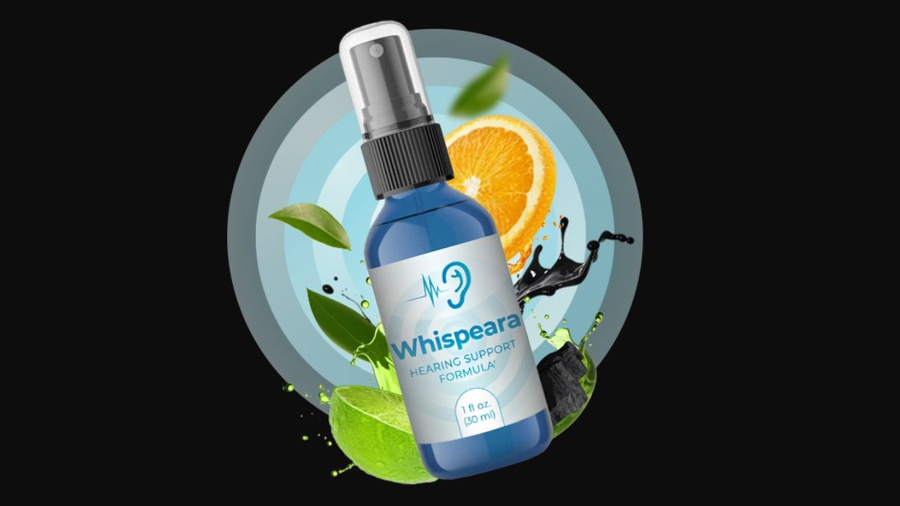

Health Reviews Labs investigated the neurotransmitter-balance theory behind Whispeara — and what the research actually supports about GABA, dopamine, and central tinnitus.

GABA + Dopamine Formula · Liquid Drops · 60-Day Guarantee
→ Click Here for Official SiteTraditional tinnitus treatment assumes the noise originates in the ear — from hair cell damage or cochlear dysfunction. But research into central tinnitus shows that in a significant percentage of cases, the auditory cortex and surrounding neural pathways generate phantom sound signals due to neurotransmitter imbalance — particularly insufficient GABA activity, the brain's primary inhibitory neurotransmitter. When GABA signaling is weak, neurons in the auditory pathway become hyperexcitable and fire abnormally, which the brain interprets as ringing or buzzing even without external sound. This explains why some people experience persistent tinnitus despite normal hearing test results — the problem isn't the ear, it's the signal processing.
The brain's primary inhibitory neurotransmitter — included directly to support neural calming in the auditory pathway. Oral GABA's blood-brain barrier crossing is debated in research (addressed honestly below), which is part of why the formula also includes precursor support ingredients.
A natural source of L-DOPA, the direct precursor to dopamine. Dopamine interacts with GABA signaling in regulating neural excitability — supporting balanced dopamine production is relevant to the broader neurotransmitter balance that central tinnitus theory targets.
Supports acetylcholine production — a neurotransmitter involved in auditory signal processing and memory consolidation. Relevant to the cognitive clarity dimension many tinnitus sufferers report losing alongside the ringing itself.
Converts to nitric oxide, improving blood flow to the auditory system. Relevant regardless of whether tinnitus originates centrally or peripherally — adequate cochlear and auditory nerve circulation is a baseline requirement for auditory health.
A mineral-rich adaptogenic substance used in traditional medicine for nerve sheath support, tissue repair, and reduced inflammation. Contributes to the general vitality and nerve health dimension of the formula.
Additional neurotransmitter precursor support for dopamine and norepinephrine synthesis — relevant to focus, stress resilience, and the broader neurochemical balance the formula targets.
Each ingredient in Whispeara has supporting research for its general role in neurotransmitter balance or circulation. However, the exact dosages in the proprietary blend are not disclosed, which makes it difficult to compare against doses used in clinical studies. The question of whether oral GABA effectively crosses the blood-brain barrier remains genuinely unresolved in broader research — this is a real limitation worth knowing. The ingredient logic targeting central tinnitus is sound, but expectations should be realistic, and anyone with persistent or worsening tinnitus should also consult an audiologist rather than relying on supplements alone.
Whispeara's central tinnitus theory — addressing neurotransmitter imbalance rather than assuming all tinnitus is ear-based — is a genuinely different mechanistic angle than most hearing supplements in this category, which focus primarily on cochlear circulation. The 6-ingredient formula targets GABA, dopamine, and acetylcholine pathways relevant to auditory signal processing. The proprietary blend's undisclosed dosages and the unresolved question of oral GABA bioavailability are real limitations. For people whose tinnitus seems disconnected from measurable hearing loss, the central mechanism this formula targets may be more relevant than circulation-first formulas. GMP-certified US facility, 60-day guarantee.
GABA + Dopamine + Acetylcholine Formula · 60-Day Guarantee
→ Click Here for Official Site